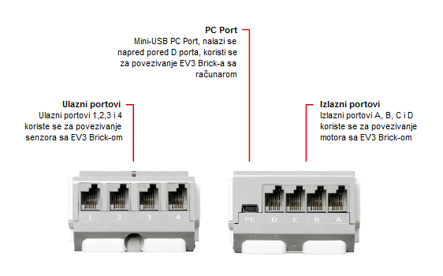
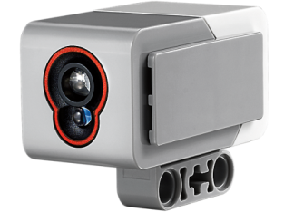
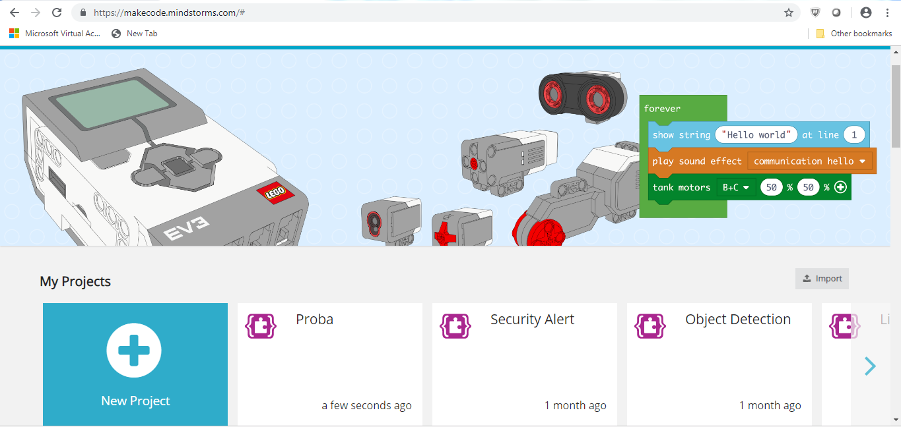
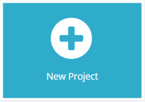

EV3 – Osnovne karakteristike i komponente¶
Prije nego što započnemo priču o programiranju robota Mindstorm Lego EV3 pomoću internetske platforme MakeCode, upoznajmo se s osnovnim značajkama robota EV3 i okruženja MakeCode.
Osnove Lego EV3 robota – hardver¶
LEGO Mindstorms EV3 komplet sastoji se od različitih mehaničkih i električnih dijelova iz kojih se mogu sastaviti roboti različitih oblika i namjena.

Robot mora imati senzore koji skupljaju informacije iz okoline u kojoj se robot nalazi (osjetila robota), procesor koji obrađuje te informacije, tj. misli (mozak robota), mehanički dijelovi koji se kreću i izvode radnju, kao i izvor energije koji napaja određene dijelove robota i unosi život robotu.
Osnovni dijelovi robota su:
kontrolni dio
izvor napajanja
portovi
Servo motori
Senzori
Kontrloni dio (EV3 Brick)
Na prvi pogled postaje očigledno da je kvadratno tijelo robota zauzeto kvadratnom EV3 jedinicom u kojoj se nalazi procesor. S priključcima i kablovima je povezan sa senzorima iz kojih prima i obrađuje informacije, a na temelju parametara koje odredimo kroz program može slati upravljačke signale mehaničkim dijelovima, odnosno motorima, ali i izdavati neko zvučno upozorenje. Računalo komunicira s upravljačkom jedinicom putem bluetooth ili USB kabela.
Zapravo radom robota upravljaju dva programabilna AVR mikrokontrolera. To su uređaji koji, osim procesora, sadrže i neke periferne uređaje, poput memorije, tajmera, AD pretvarača, tako da se mogu programirati nekoliko puta.
Naravno, ova se integracija vrši na štetu smanjenja memorije u odnosu na standardni računalni procesor, pa je potrebno neke programe često brisati da bi se učitali novi.
Sljedeća slika prikazuje kontrolni dio zajedno s ekranom preko kojeg upravljamo operacijama koje izvodimo na robotu.


Da bi aktivirao EV3 Brick, korisnik mora pritisnuti gumb u sredini. Kada pritisnete gumb, kocka će svijetliti crveno, a prikazat će se početni zaslon.
Kad se svjetlo promijeni u zeleno, EV3 Brick je spremna za rad. Da biste isključili EV3 kocku, morate pritisnuti tipku za povratak dok se ne pojavi zaslon za isključivanje napajanja. Klikom na znak za potvrdu i pritiskom na središnju tipku, EV3 kocka će se ugasiti. Ako odaberete X, korisnik se vrаćа u Run Recent (Posljednji) ekrаn.
Izvor napajanja
Kao i svaki elektro-mehanički sklop, robotu LEGO Mindstorms EV3 potrebna je snaga. Standardno LEGO robotsko napajanje je baterija od 6AA 1,5 V. 9V pokreću električni motori, 5V napaja jedan od mikrokontrolera i neki integrirani krugovi. 3.3V napaja glavni mikrokontroler. Izlazni priključci napajaju se od 4,3 V i imaju zaštitu od prekomjernog struja.
Novije verzije robota imaju punjive baterije kao mobilni telefoni. Energija se može dobiti iz solarnih ćelija koje robot može nositi, ali energija iz gradske mreže može se koristiti i ako se robot ne pokrene.
Portovi
Već smo spomenuli da upravljačka jedinica prima podatke iz okoline pomoću senzora, obrađuje ih, a zatim šalje odgovarajuće upravljačke signale motorima. Komunikacija s perifernim uređajima obavlja se putem portova.
Prema uputama podataka, portovi se mogu podijeliti na ulazne i izlazne portove. Postoje po 4 porta.
Izlazna jedinica sastoji se od motora i ulaznih senzora. Ako u programu ne kažete drugačije, po standardu će se koristiti sljedeće:
port A za motor srednje snage
port B i C za dva kombinirana motora veće snage
port D za jedan motor veće snage
Također, osim ako ne definirate drugačije, portovi unosa standardni dodijele sljedeće portove:
port 1 za senzor dodira
port 2 za senzor temperature ili žiroskop
port 3 za senzor u boji (svjetlosti)
port 4 za infracrveno otkrivanje ili ultrazvučni senzor
Motori
Svako kretanje robota bilo bi nezamislivo bez motora. Najčešće postoje tri servo motora koji primaju električne signale potrebne za pogon kroz svoje priključke. Servo motori se najčešće koriste kada treba svladati male sile, poput otvaranja nekih vrata, nošenja malih dimenzija na kratkim udaljenostima i slično. Zato se najčešće koriste za izradu malih robota, robotskih oružja i drugih manipulatora. Servo motori ne zahtijevaju snažno napajanje, jednostavni su za upravljanje i pouzdani.

Osnova servo motora zapravo je jednosmjerni motor s određenim brojem stupnjeva prijenosa, a njihov rad zasnovan je na načelu modulacije širine impulsa PWM (Pulse Width Modulation). Mikrokontroler obrađuje podatke o faktoru punjenja PWM signala (broj od 0 do 100 i ažuriran od 0 do -100) i na temelju tog broja određuje se postotno trajanje PWM signala.
Pozitivni brojevi odnose se na pomicanje prema naprijed, a negativni na kretanje unatrag. Pored očite razlike u veličini, motori se razlikuju u RPM-u (okretanje u minuti). Veći motor je sporiji, ali pruža veću snagu.
Dok je srednji motor brži i stabilniji. Sadrže tahografe koji nam pružaju informacije o broju rotacija i razne druge korisne informacije.

Pravilnim rasporedom i programskom upotrebom možete stvoriti razne mehanizme za kretanje pomoću kojih se robot može kretati na kotačima, stazama, skakati poput žabe, kretati se kao škorpion, ali i hvatati predmete, gurati ih i postavljati na određeno mjesto.
Senzori
Kao i ljudima, i robotu su potrebna osjetila za analizu okoliša.
Standardni LEGO robot ima četiri vrste senzora:
ultrazvučni (onaj čiji izgled podsjeća na oko) i koristi se za određivanje udaljenosti od prepreke,
optički (senzor u boji) koji, kao što mu ime govori, reagira na razinu okolne svjetlosti, odnosno detektira boju kao vrijednost elektromagnetskog spektra,
akustični koji reagira na osjetljivost okoline okoline senzora koji reagiraju, dodiruju ili pritisnu prekidač,
žiroskop, mjeri promjenu kuta kretanja objekta (robota.
Ultrazvučni senzor
Ovaj je senzor digitalni uređaj koji mjeri udaljenost do objekta.
Osim prijemnika ultrazvuka, koji je svojevrsni poseban mikrofon, ovaj senzor ima i ultrazvučni odašiljač. Odašiljač šalje ultrazvučni val koji se vraća robotu nakon što odbije od prepreku. Ovaj reflektirani val prihvaća prijemnik, koji je u stvari pravi senzor. Mjereći vrijeme proteklo od emitiranja ultrazvučnog vala do dolaska odjeka tog vala usmjerenog na prepreku, robot izračunava udaljenost od prepreke.

Udaljenost se mjeri u inčima ili centimetrima. Kada se koristi centimetar može se mjeriti od 3 do 250 cm s odstupanjem od +/- 1 cm. U inčima mjeri od 1 do 99, a odstupa +/- 0,394 inča. Brzina ultrazvuka je oko 300 m/s, a zvučni val putuje od odašiljača do prepreke i natrag prelazeći stazu jednaku dvostrukoj udaljenosti od robota do prepreke. Procesor mora izračunati samo udaljenost od prepreke po formuli s = v · t.

Za točnije, mora se uzeti u obzir da brzina ultrazvuka u zraku ovisi o temperaturi i, naravno, o učestalosti ultrazvuka koji odašiljač povezuje sa senzorom. Nije teško vidjeti da nas ovo svojstvo podsjeća na šišmiša koji se, iako s oskudnim vidom, nepogrešivo orijentira u prostoru zahvaljujući lokatorima odjeka.
Optički senzor
Senzor u boji je digitalni senzor koji može otkriti boju ili intenzitet svjetla koji se očitavaju iz malog otvora na prednjoj strani. Čita 1 KHz/sec.
{kind=link}
Odgovara na svjetlost ili svjetlosne promjene u okolini. Prije su senzori bili crno-bijeli i prepoznavali su neke nijanse sive. Danas su senzori složeniji i mogu prepoznati boju, tj. razinu u elektromagnetskom spektru. Zbog toga ih se često naziva senzorima u boji. Čovjek (za razliku od životinja) ima razvijen vid zahvaljujući visoko razvijenom mozgu koji je u stanju primati i obrađivati veliku količinu informacija, što rezultira prepoznavanjem slike.
Može se koristiti za:
Čitanje u boji: Senzor prepoznaje 7 boja (crna, plava, zelena, žuta, crvena, bijela i posebna kada ne prepoznaje boju). Na primjer, robot se može programirati za razvrstavanje obojenih blokova, izgovara boje koje prepoznaje ili se zaustavlja kad prepozna crvenu.
Refleksijа svjetlosti: robot koristi lampu za emitiranje crvene svjetlosti i mjeri intenzitet svjetla koja se odbija od objekta. Koristi ljestvicu od 0 (vrlo crna) do 100 (vrlo svijetla). Na primjer, moguće je programirati robota da se kreće po bijeloj površini dok se ne dođe na crnu boju.
Osvjetljenje ambijenta (okruženja): mjeri se jačina svjetlosti koja se dobiva od okruženja, kao npr. svjetlost od lampe. Skala se koristi kao i kod druge varijante. Na primer, može se robot programirati tako da se oglasi kada svane kao alarm za buđenje.
Postoje jasna ograničenja na senzore, tj. robote, pa je orijentacija u prostoru zasnovana na slikama u obliku velikog broja točaka je teško. Zbog toga je ovaj senzor i komunikacija putem njega veliki izazov za dizajnere.
Senzor dodira

Ovo je zapravo prekidač koji ima dva stanja:
pritisnuti (kada robot dodirne prepreku) ili
otpušten (kada senzor ne dodirne nijedan predmet).
Žiroskop
Žiroskop je digitalni senzor koji otkriva gibanje mijenjajući kretanje robota. Kad se robot kreće, ovaj će senzor prikazati to kao promjenu brzine rotacije u stupnjevima u sekundi (deg/s). Maksimalni omjer je 440 deg/s.

Na temelju tih podataka moguće je utvrditi da li se robot okreće, i na taj način programirati te okrete (odstupanje +/- 3 stupnja za kut od 90 stupnjeva). Da bi senzor dao točne rezultate, potrebno je zaustaviti robota prije uključivanja radi precizne kalibracije ovog senzora.
Pored navedenog, na raspolaganju su razne vrste senzora kao što su zvučni senzori, temperaturni senzori, infracrveni senzori.
Glavni izbornik EV3
EV3 Brick sadrži četiri osnovna zaslona preko kojih možete pristupiti nizu jedinstvenih značajki (od jednostavnog pokretanja i zaustavljanja programa do pisanja samog programa) na EV3 Brick.
Run Recent
Na ovom će se zaslonu prikazati popis preuzetih i pokretanih programa. Program na vrhu popisa je program koji je zadnji put korišten.
File Navigation (Navigacija datoteka)
S ovog zaslona korisnik može pristupiti svim datotekama na EV3 Brick i upravljati njima, uključujući datoteke pohranjene na SD kartici.
Aplikacije
EV3 Brick dolazi s četiri aplikacije. Uz to, korisnik može kreirati vlastite programe pomoću softvera EV3.
Port View
Na prvom ekranu u Port Viewu korisnik može vidjeti koji su priključci na tenisice i motore, odnosno koji su priključci zauzeti. Pomoću tipki EV3 Brick za navigaciju korisnik može provjeriti koji su priključci zauzeti i odmah pročitati vrijednost sa senzora ili motora.
Motor Control
Kontrolira kretanje svakog motora spojenog na jedan od četiri izlazna priključka.
IR Control (Infracrvena kontrola)
Upravlja kretanjem svakog motora spojenog na jedan od četiri izlaza pomoću “daljinskog” - infracrvenog svjetla, i “prijemnika” - infracrvenog senzora.
Brick Program
EV3 Brick dolazi s programom za programiranje na brick-u koji je sličan softveru koji se instalira na računalu. Na taj se način stvaraju lakši programi, tako da su prikladni za sve početnike. Drugi razlog je stvaranje i testiranje samog robota, bez korištenja računala.
Brick Dialog
Očitavanje senzora i motora. Ako su senzori i motori spojeni na EV3 Brick, grafikon će prikazati trenutna očitanja jednog senzora ili motora, poput osciloskopa.
Postavke
Ovaj zaslon omogućuje vam pristup širokom rasponu općih postavki na EV3 Brick-u, poput glasnoće, povezivosti putem Bluetooth-a ili Wi-Fi-ja, vidljivosti ili dobivate informacije o samom EV3 Brick-u. Prilagođava zaslon, glasnoću i vrijeme mirovanja nakon čega se upravljačka jedinica isključuje.
Radno okruženje - Software¶
Za zahtjevnije aplikacije koriste se napredniji programi i razvojna okruženja koja nude izvrsne mogućnosti prilikom izrade programa. Zbog sve veće popularnosti i implementacije, programeri su razvili (i razvijaju) veliki broj klasa na popularnim programskim jezicima poput C#, MatLab itd., Samo da bi stvorili aplikacije koje upravljaju Lego robotima. Na korisnicima je da odaberu slaganje blokova u blok ili da program napišu kao niz uputa na jednom od programskih jezika.
U ovom ćemo dijelu tečaja razmotriti mogućnosti razvojnog okruženja MakeCode. U ovom programskom okruženju možete kreirati jednostavne programe poput “Idite desno 5 sekundi i zaustavite se”, a možete pustiti maštu da radi, uključujući složenije programe, uključujući senzore i motore.
Kad pristupimo programskom okruženju MakeCode (https://makecode.mindstorms.com/),
kao i kod većine programa, primjećujemo da se od nas očekuje stvaranje novih () ili za otvaranje postojećeg programa. Da biste saznali više o programskom okruženju EV3 i kako biste naučili kako stvoriti prvi program, korisnik može koristiti opcije Getting Started ili razne vodiče.
{kind=link}
Klikom na tipku ili otvaranjem postojećih projekata, korisnik pristupa softverskom okruženju u kojem se nalaze blokovi kontrole robota.

Svi programski blokovi koji se koriste za kontrolu robota nalaze se u programskoj paleti u sredini programskog sučelja. Programski blokovi podijeljeni su u kategorije prema vrsti i prirodi. Prednost ovog okruženja je postojanje simulacije robota.
Projekti¶
U sljedećim tutorijalima predstavit ćemo nekoliko zanimljivih projekata vezanih za programiranje programiranja EV3 robota na MakeCode platformi. Svi se projekti rade korak po korak, tako da ih svi mogu iznova raditi. Opisani su svi postupci dizajniranja projekta, od načina dizajniranja programa do njegovog testiranja.